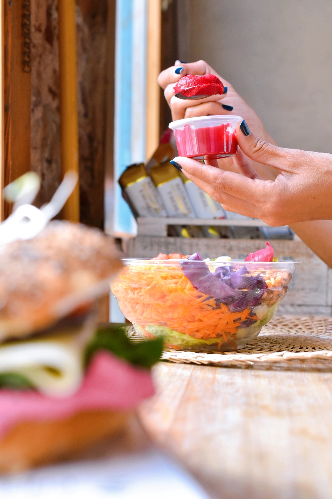

COMIDAS RICAS Y CHULAS POR DONDE SE MIREN
Que la comida nos alimente, nos una, nos haga felices. Que sea rica y atractiva, no sólo a la vista, sino también para la salud. Cada plato que elaboramos está pensado para que además de ser sabroso sea completo en nutrientes. Usamos insumos de primera calidad y evitamos los ultraprocesados. Todo es super fresco y casero. Elaboramos cada producto conscientes y responsablemente como si cocinaramos para nuestra familia. ¡Eso es lo que queremos transmitir en Cuoca!. Amor en cada detalle, para brindarles lo mejor a nuestros clientes y que coman como en casa.
COCINA A LA VISTA
¡Nos encanta que vean dónde y cómo cocinamos! Tenemos un ventanal que deja ver todo mientras producimos para ustedes. Es lindo que conozcan la cocina y las instalaciones donde se elaboran todos los productos que van a disfrutar. Con más o menos lío, más o menos aceleradas... Pero siempre cuidando la higiene en el proceso de producción y cocinando responsablemente.
COMPROMISO CON EL AMBIENTE
Somos conscientes de lo importante que es nuestro aporte en el cuidado del medio ambiente que tanto nos brinda. Estamos comprometidos en reducir el uso de plásticos. Ofrecemos bolsas de frizelina con nuestro logo que pueden reutilizar al momento de hacer compras y estamos en proceso de sustitución de materiales para el packaging de nuestros productos por materiales mas amigables con el ambiente. De la misma manera procuramos minimizar los desehechos plásticos en el proceso de producción.
PET FRIENDLY
Nuestros clientes pueden entrar acompañados con sus mascotas. En Cuoca son todos bienvenidos!

STOP SERVICE
Tenemos un rinconcito para que puedas aderezar tus ensaladas y platos como más te guste. Ofercemos aceite de oliva, vinagre de manzana orgánico, aceta balsámico, sal marina y pimienta.
CAFÉ DE ESPECIALIDAD
Escuchamos a nuestros clientes, y esto es algo que nos han pedido mucho... Un rico café. Por eso incorporamos el rubro de cafetería, con café de primera calidad, granos tostados en Córdoba y molidos en nuestro propio local.
PASTELERÍA ARTESANAL
¿Y qué mejor que un buen café acompañado de algo rico y caserito? En Cuoca también elaboramos productos de pastelería artesanal, ideales para el desayuno, la merienda o simplemente como antojo. Ofrecemos algunas opciones de pastelería mas saludables que la tradicional, mediante el uso de azúcar orgánica, el reemplazo de la harina de trigo por avena u otro tipo de harina.

NUESTRO ALMACÉN
Además de ofrecer comidas ricas, anexamos a nuestro local productos de almacen saludables de uso cotidiano, algunos orgánicos, ideales para cocinar o complementar en la alacena.